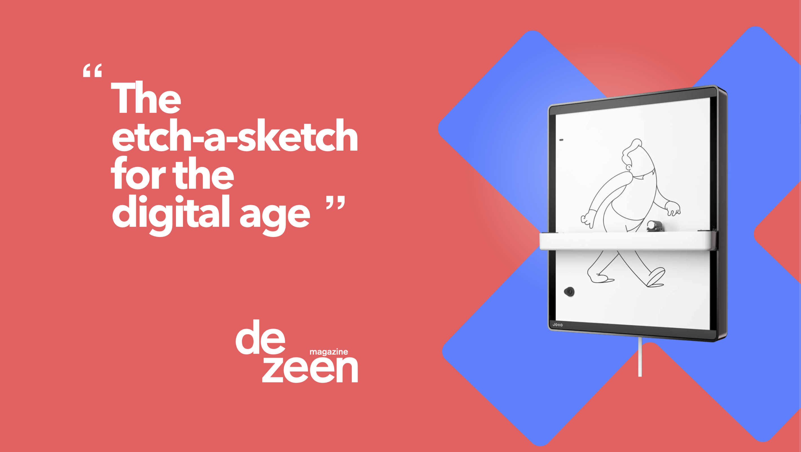
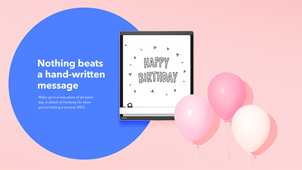

APP DESIGN – UX, UI, DESIGN SYSTEM
Joto
Crafting a new brand identity
Joto was the first consumer product Those brought to market, and it was designed as a balance between the convenience of digital interaction and the tactile nature of analogue communication. As creative manager and lead designer, I worked on all facets of the brand, providing a full range of strategic, creative and technical expertise from conceptualisation through to production.
I strived to create a brand that wasn't just bold and modern, but a lot of fun. We wanted to pour more of Joto's personality into all brand elements and find a better way to show what the product really is about: bringing more joy to people's lives.
The new visual look combined a high energy color palette and a set of bold shapes with monochrome single line illustrations. The shapes, inspired by a take on the existing Joto logo, animate and bring interest to specific areas of the layout. I developed the brand guidelines, and was responsible for setting the art direction used in campaigns across all marketing collateral and digital platforms.
The new visual look combined a high energy color palette and a set of bold shapes with monochrome single line illustrations. The shapes, inspired by a take on the existing Joto logo, animate and bring interest to specific areas of the layout. I developed the brand guidelines, and was responsible for setting the art direction used in campaigns across all marketing collateral and digital platforms.



The website
Featuring a brand new look, the website aim was a first bold introduction to Joto's new users. We had to make sure it was possible for anyone to understand at a glance what the product was about, and to find any necessary tech specs in the least amount of time. Animations on scroll would introduce different use cases – art, play, messaging, lists – and newest product integrations with other apps.
We started to build a community around Joto by introducing it to the many talented artists and illustrators on Instagram, who kindly contributed with artworks to be brought to life. Big hands up to @anthonyburrill @bentheillustrator @burnttoastcreative @mr_bingstagram and many more!
We started to build a community around Joto by introducing it to the many talented artists and illustrators on Instagram, who kindly contributed with artworks to be brought to life. Big hands up to @anthonyburrill @bentheillustrator @burnttoastcreative @mr_bingstagram and many more!


E-commerce site
The website was also an online store, where users could get their hands on a new Joto and a few other accessories. It was especially important to also include lifestyle photography of Joto at home, and close-up shots highlighting the details of the product showing off the quality and care with which the item was made.
Results
Joto was awarded the public vote for design of the year at the London Design Museum and has been an incredibly rewarding journey to experience every stage.
- Joto Kickstarter featured on The Verge
- Beazley Design Museum Design of the Year Public Vote
- Creative Pool Awards (x2) – Silver and People's choice
- Joto drawing robot is an Etch A Sketch for the digital age featured on Dezeen
Role Lead Digital Designer
Responsibilities Brand design, art direction, graphic design, web design, UX, UI
Launch date 2017-2018
Responsibilities Brand design, art direction, graphic design, web design, UX, UI
Launch date 2017-2018